Programming Projects
These projects are listed in order from coolest (the ones I spent the most time creating) to simplest (the ones I made in about one day).
(1) Online fractal exploration tool
Click here to start making art!
If this won't work with your device/browser, or if you find any other bugs in the program, please open a GitHub issue.
Click here to view the slides for a talk I gave in April 2025, titled "Fractals in Physics & Art".
(2) Spot-It Card Game Generator
Click here to make your own custom Spot-It cards and learn about the cool math used to create them.
(3) Cookbook
Click here to visit my personal cookbook.
(4) Strange attractors & stereograms
(This video may take a long time to load)
Stereograms are 2D pictures which will appear to pop out of the page when you allow your left and right eyes to focus on different parts of the image. Click on the video above to pause it until your eyes have resolved the image, since it will be much harder for your eyes to lock in while it's moving.
Each frame of that video was made by plotting 25 million points using C++ to form a 3D strange attractor which resembles a 2D Clifford attractor, then taking snapshots of it from slightly different angles to form a stereogram. The colorscheme is designed to loosely imitate a thin film interference pattern.
(5) Perfect pitch training game
There are tons of apps that are designed to train your ears to recognize piano notes by name. This one doesn't have the best user inteface, but at least it's free.
(6) Error correction with Golay codes
This webpage demonstrates how Golay coding uses cool math to remove remove noise from a transmitted message.
(7) Online steganography tool
This tool allows you to hide messages within pictures without visibly changing the pictures. It is intended as a proof of concept; it is not legit tool for evading steganalysis.
(8) Unit conversion with matrices
I made this short document while taking an undergraduate particle physics course. It's not a programming project, just a writeup of a nifty (but not super useful) idea I wanted to share. It describes how the logarithm of a quantity with units, which usually wouldn't be allowed in math, can be interpreted as an element of the real vector space spanned by {1, log(kg), log(m), log(s)}. Applying a change-of-basis and then exponentiating will give the original quantity, but expressed in natural units instead of SI units.
Fractal Gallery

 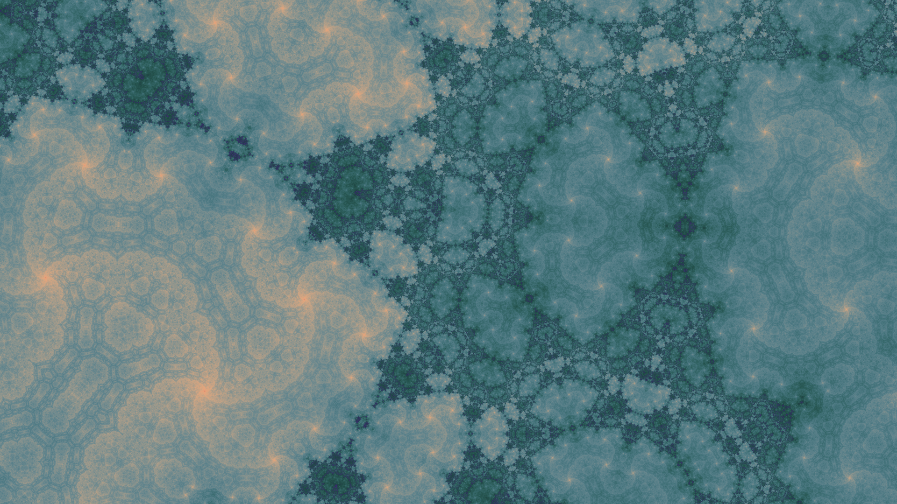
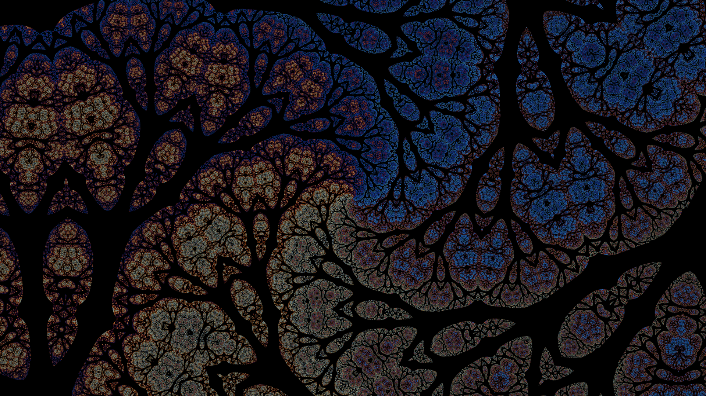
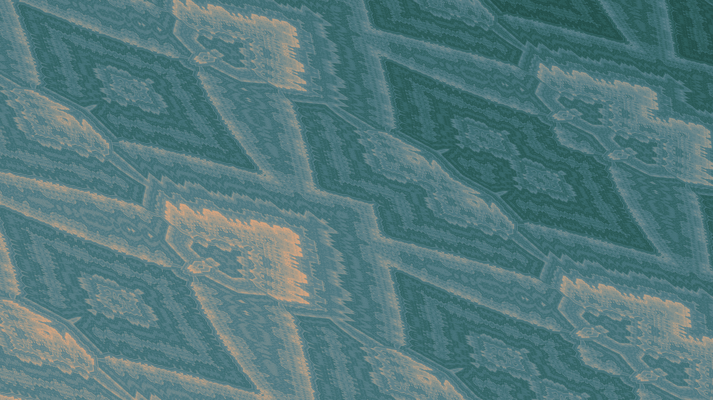
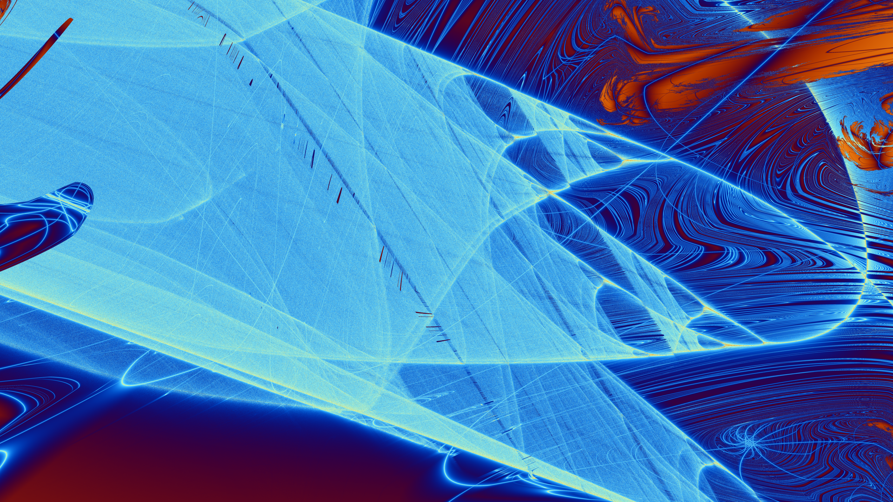
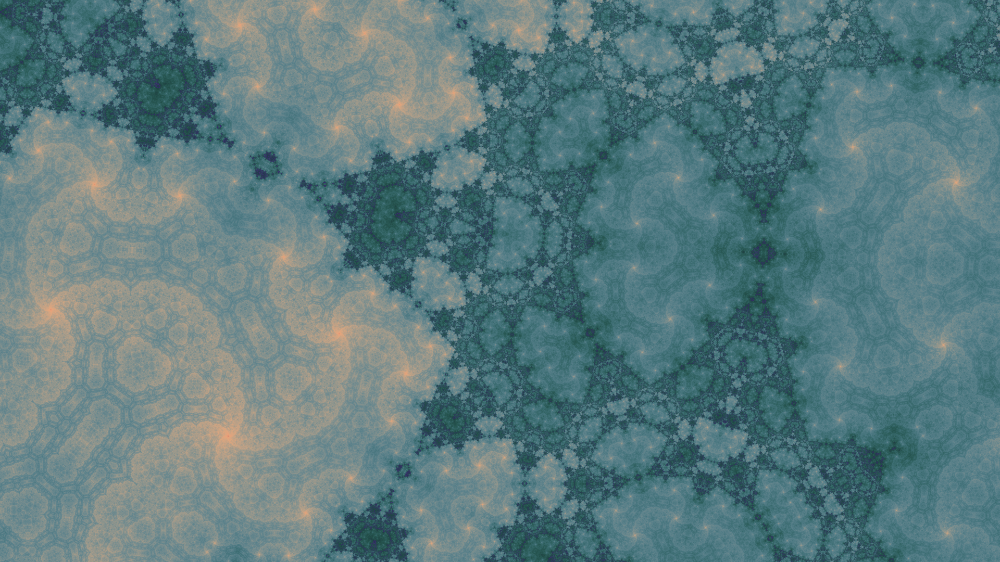
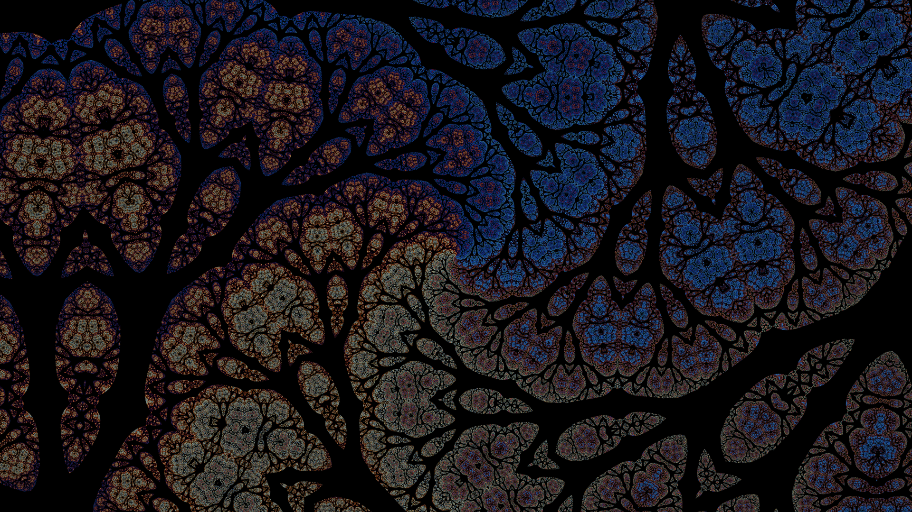
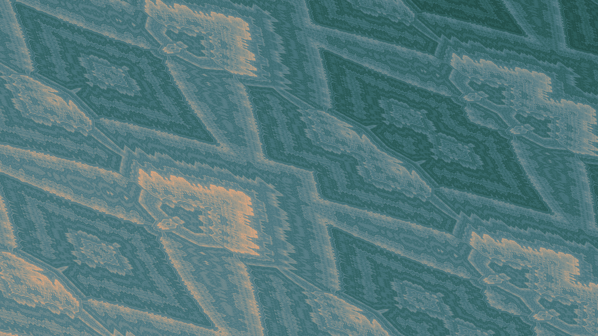
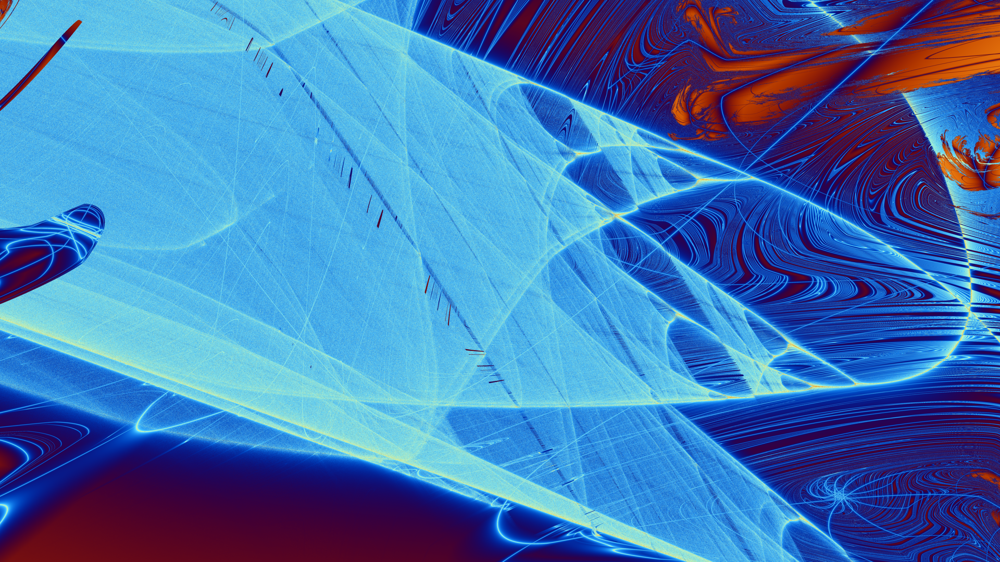
{kind=link}
{kind=link}
{kind=link}
 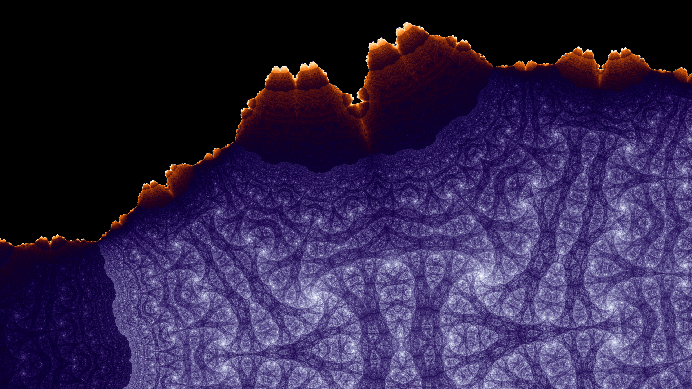
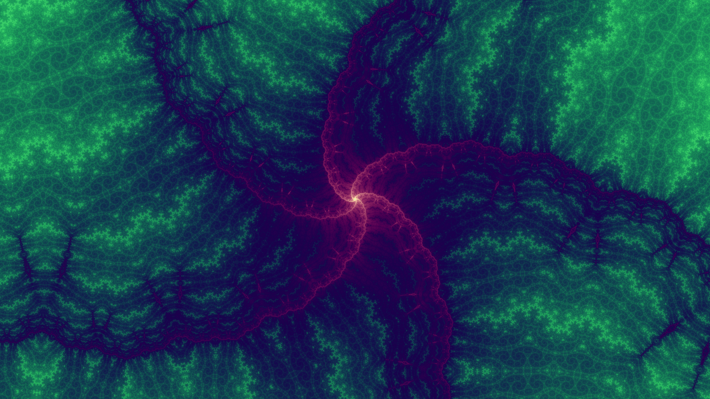
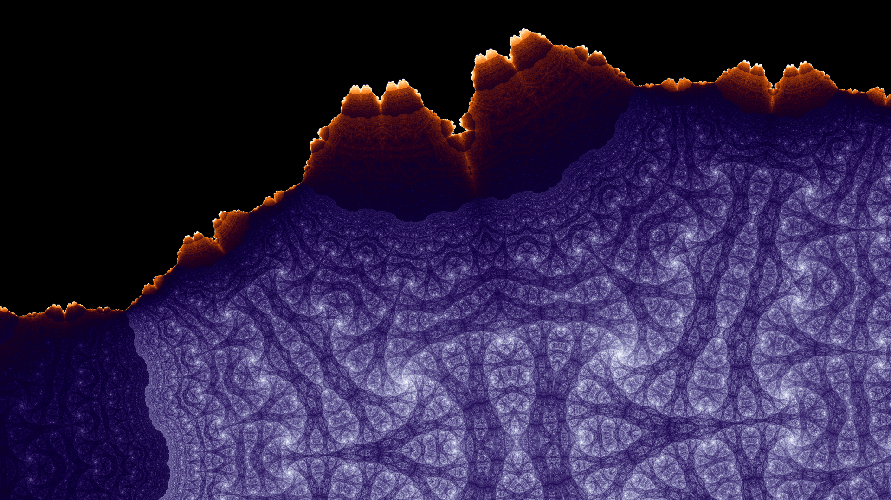
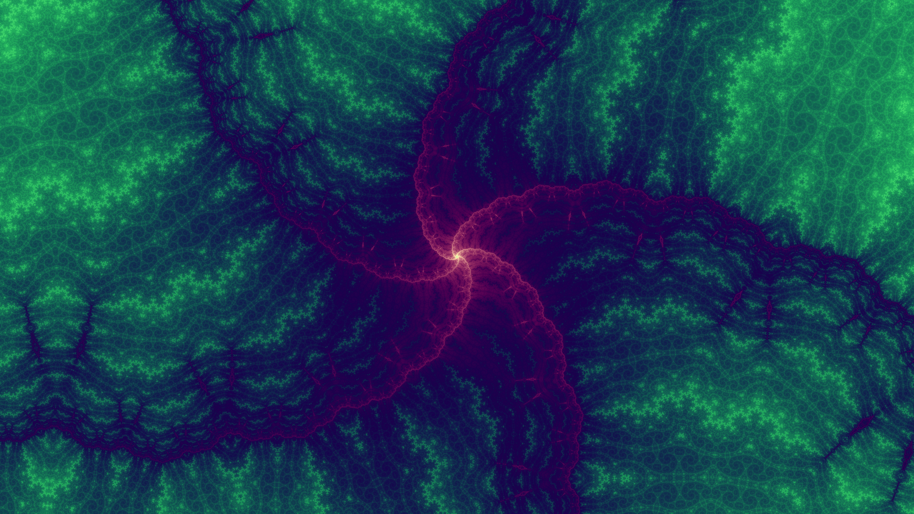

 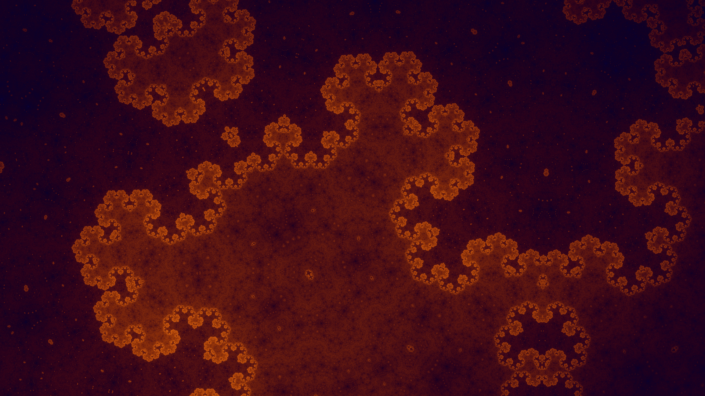
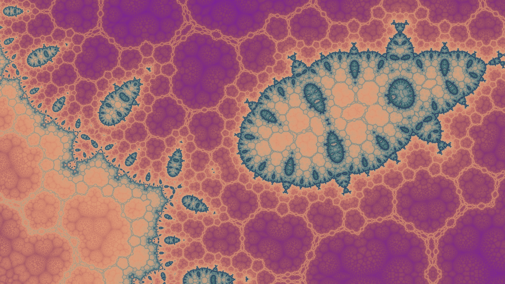
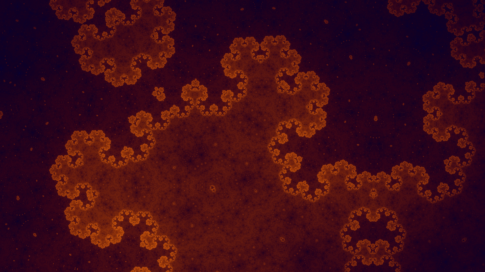
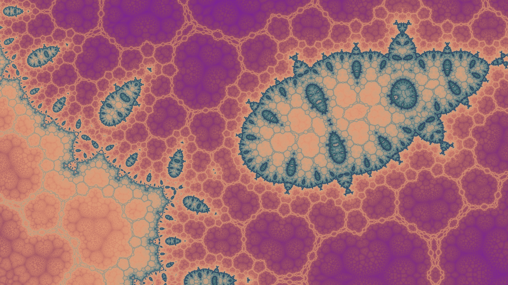


About me

Hi, my name is Nathan. My hobbies include cooking, playing piano, and spending time with my friends. If you have any questions or feedback about my site, please email me.